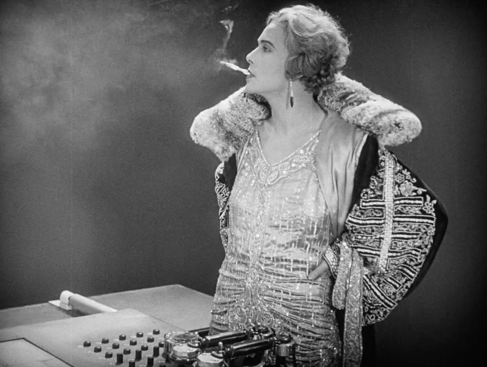

Fritz Lang played an important role not only in shaping the spy thriller, but also in introducing stylistic and narrative elements that later became central to film noir, including the femme fatale figure within espionage stories.
Early Spy Film Innovations Lang’s film Spies (1928) helped establish many conventions of the spy genre: secret organizations, coded communication, elaborate surveillance systems, and a constant game of deception between rival agents. The film presents espionage as a modern system of hidden power operating within banks, transportation networks, and government institutions.
Noir Aesthetics and Psychological Suspense Lang’s work in the German Expressionism introduced visual techniques—dramatic shadows, stark lighting contrasts, and claustrophobic interiors—that later became hallmarks of Film noir. When Lang emigrated to the United States after the rise of Adolf Hitler, he brought these stylistic techniques to Hollywood. His American films, especially The Woman in the Window (1944) and Scarlet Street (1945), helped define noir’s atmosphere of paranoia, betrayal, and moral ambiguity—qualities that later shaped Cold War spy films.
Development of the Femme Fatale in Espionage Narratives Lang also contributed to the development of the femme fatale, a key figure in both noir and espionage cinema. In Spies, the character Sonja is a female agent who initially serves the criminal mastermind Haghi but becomes emotionally conflicted. She uses charm, seduction, and deception—traits that later define the classic femme fatale archetype. This character type became standard in later spy films: a mysterious woman who may be an ally, a traitor, or a double agent. The trope appears prominently in works influenced by Lang’s approach, including Notorious (1946) by Alfred Hitchcock, where romance and espionage intertwine with questions of loyalty and betrayal.

Moral Ambiguity in Spy Characters Lang’s films blurred the line between hero and villain. Spies, criminals, and government agents all operate through deception and manipulation. This moral ambiguity later became a defining feature of both film noir and Cold War espionage stories.
Legacy By combining espionage plots with expressionist visual style, psychological tension, and the dangerous allure of the femme fatale, Fritz Lang helped shape two interconnected traditions: the spy thriller and film noir. These elements influenced generations of filmmakers and remain central to modern espionage cinema.